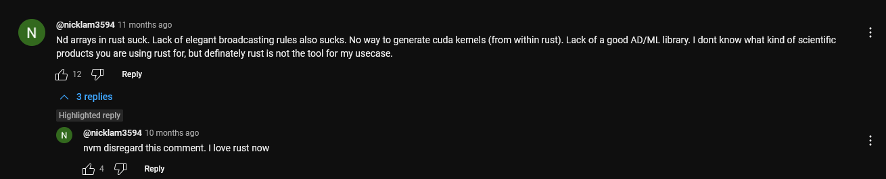
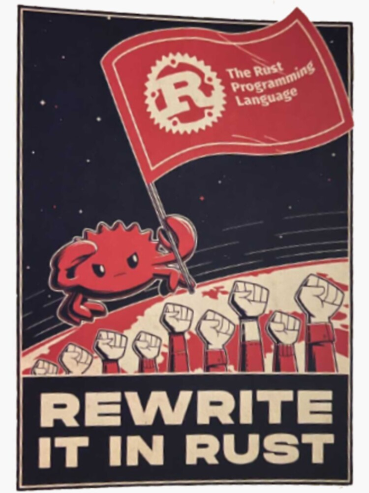
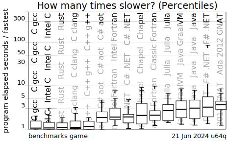

Created: 2024-06-25 Tue 14:58
 (youtube link: https://www.youtube.com/watch?v=0JkbNFpXlXc&lc=UgwQJyFb6m1vBkg431d4AaABAg.9sIktyoda_P9t3lAdkUZLB )


fn main() {
let pantry = vec![Food::Fasolakia(3), Food::Burger, Food::Gyros];
let yummy_foods = yummy(&pantry);
println!("{:?}", yummy_foods);
}
// returns if a food is yummy or not
fn yummy(lista: &Vec<Food>) -> Vec<bool> {
let is_yummy = lista.iter().map(|food| match food {
Food::Fasolakia(_) => false,
Food::Burger => true,
Food::Gyros => true,
});
is_yummy.collect()
}
#[derive(PartialEq)]
enum Food {
Fasolakia(u16),
Burger,
Gyros,
}
cargo run Compiling example1 v0.1.0 (C:\Users\NLamprinidis\Downloads\opada-2024\example1) error[E0004]: non-exhaustive patterns: `&Food::Gyros` not covered --> src/main.rs:9:50 | 9 | let is_yummy = lista.iter().map(|food| match food { | ^^^^ pattern `&Food::Gyros` not covered | note: `Food` defined here --> src/main.rs:18:6 | 18 | enum Food { | ^^^^ ... 21 | Gyros, | ----- not covered = note: the matched value is of type `&Food` help: ensure that all possible cases are being handled by adding a match arm with a wildcard pattern or an explicit pattern as shown | 11 ~ Food::Burger => true, 12 ~ &Food::Gyros => todo!(), | For more information about this error, try `rustc --explain E0004`.
fn main() {
let x = vec![1.0f32, 2.0, 3.0];
let y = vec![4.0f32, 5.0, 6.0];
let z = zero(x);
let w = zero(x);
println!("Hurray!!");
}
fn zero(x: Vec<f32>) -> Vec<f32> {
x.iter().map(|a| a * 0.0).collect::<Vec<f32>>()
}
error[E0382]: use of moved value: `x` --> src/main.rs:5:18 | 2 | let x = vec![1.0f32, 2.0, 3.0]; | - move occurs because `x` has type `Vec<f32>`, which does not implement the `Copy` trait 3 | let y = vec![4.0f32, 5.0, 6.0]; 4 | let z = zero(x); | - value moved here 5 | let w = zero(x); | ^ value used here after move | note: consider changing this parameter type in function `zero` to borrow instead if owning the value isn't necessary --> src/main.rs:9:12 | 9 | fn zero(x: Vec<f32>) -> Vec<f32> { | ---- ^^^^^^^^ this parameter takes ownership of the value | | | in this function help: consider cloning the value if the performance cost is acceptable | 4 | let z = zero(x.clone()); | ++++++++